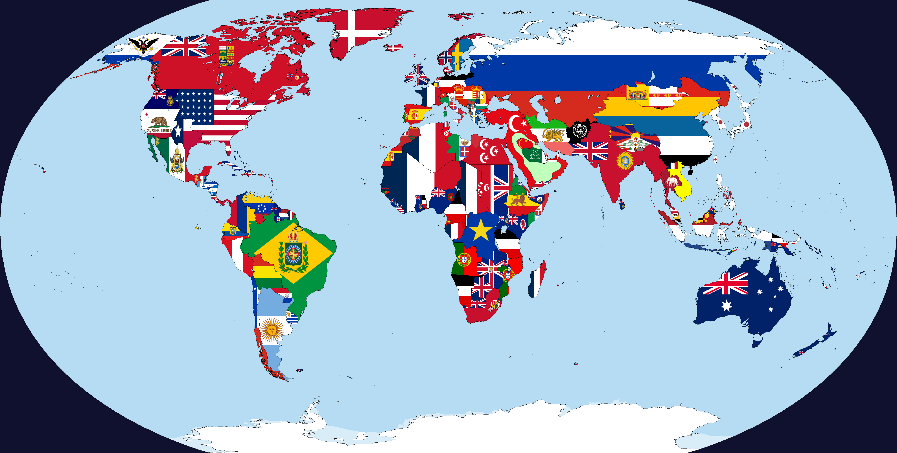
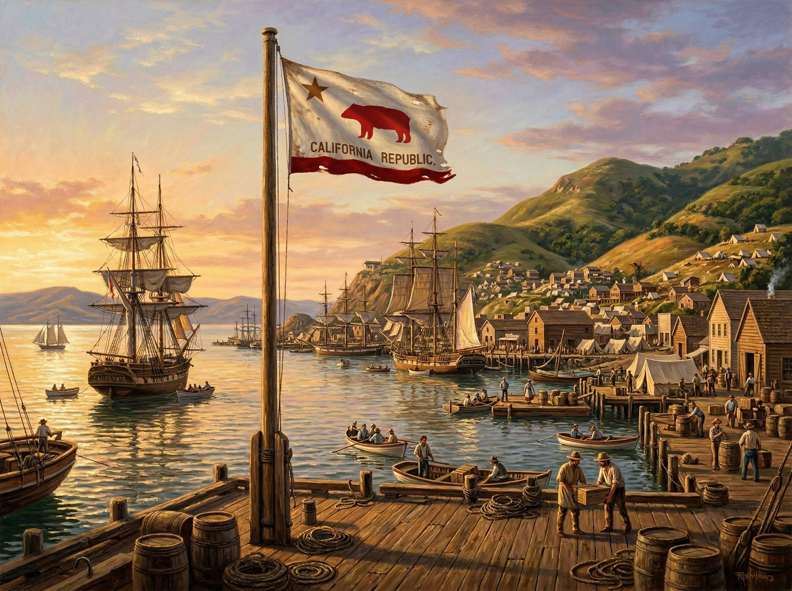
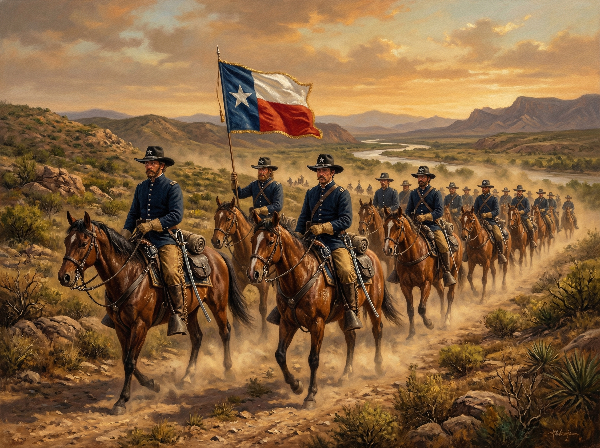
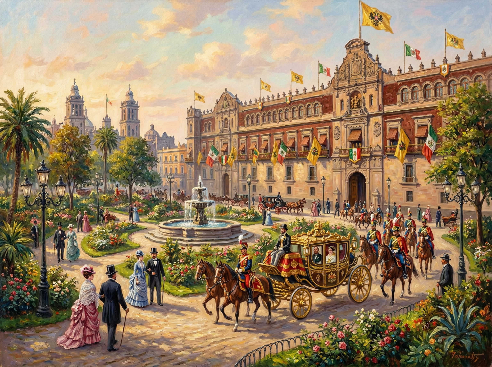

Mapa Estratégico de América del Norte (1890)

Figura 1.1: Obsérvese la consolidación de Oregón Británico y las fronteras de las Repúblicas de Texas y California.
La República Solitaria
Tras 1836, Texas rechaza la anexión a EE. UU. Buscando protección contra México, se convierte en un aliado comercial clave de Gran Bretaña, manteniendo su independencia a pesar de la deuda interna.
El León del Pacífico
La Revuelta de la Bandera del Oso de 1846 no termina en anexión. California se proclama República y utiliza la fiebre del oro para construir una flota naval que domina las rutas comerciales hacia Asia.
El Trono de Maximiliano
Sin intervención de EE. UU., el Segundo Imperio Mexicano prospera. Maximiliano I de Habsburgo estabiliza el país con apoyo francés, creando una monarquía moderna en el corazón de América.
La Fortaleza Zarista
Rusia decide que Alaska es demasiado valiosa para venderla. Se convierte en un bastión ortodoxo y militar que vigila el estrecho de Bering, lejos del alcance estadounidense.
El Istmo Soberano
La Confederación Granadina (Colombia) mantiene la estabilidad. El canal se proyecta como una obra soberana, evitando la separación de Panamá y la influencia directa de Washington.
Mirada al Atlántico
Con el camino al oeste bloqueado por potencias soberanas, Estados Unidos concentra su industria en el noreste y su influencia en el Caribe, permaneciendo como una potencia comercial atlántica.
Evidencias Fotográficas y Grabados


